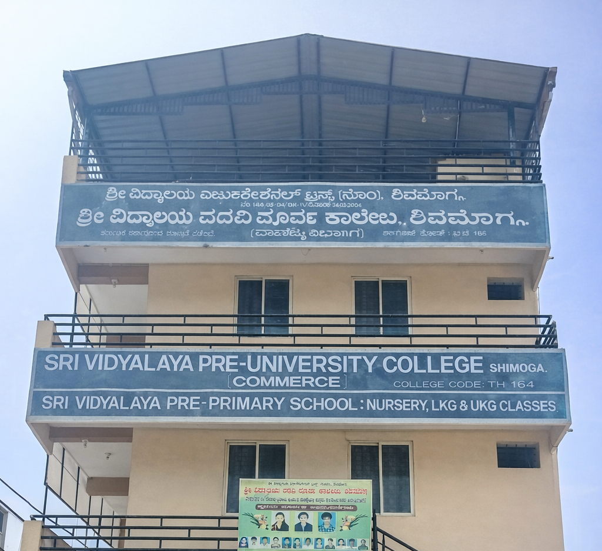

What makes Sri Vidyalaya PU College a trusted choice for Commerce education in Shivamogga?
Sri Vidyalaya Pre-University College, Shivamogga is a reputed institution dedicated to providing quality Commerce education with a strong focus on academic excellence and overall student development. Established under the guidance of Sri Vidyalaya Educational Trust, the college has built a trusted name among students and parents in Shivamogga.
With a commitment to nurturing young minds, we create an environment where students are encouraged to learn, grow, and achieve their goals. Our approach combines academic strength with personal development, ensuring students are well-prepared for higher education and future careers.
Our vision is to become one of the leading Commerce PU colleges in Shivamogga by delivering high-quality education and shaping responsible, confident, and skilled individuals. Our mission is to provide a strong academic foundation while promoting discipline, leadership, and ethical values.

Sri Vidyalaya PU College stands out as one of the best Commerce PU colleges in Shivamogga due to its student-focused approach and consistent academic performance. Our experienced faculty members use interactive teaching methods, regular assessments, and individual mentoring to ensure every student achieves their full potential.
In addition to academics, we encourage participation in seminars, workshops, cultural programs, and sports activities. This balanced approach helps students develop confidence, communication skills, teamwork, and leadership qualities, preparing them for real-world challenges.
At Sri Vidyalaya PU College, we offer specialized Commerce courses designed to build a strong academic foundation and prepare students for future professional careers. Our programs focus on core subjects such as Accountancy, Economics, Business Studies, and Statistics, ensuring students gain both theoretical knowledge and practical understanding.
We provide structured coaching for courses like CEBA (Computer Science, Economics, Business Studies, Accountancy) and SEBA (Statistics, Economics, Business Studies, Accountancy). In addition, we guide students toward higher education and professional paths such as CA, CS, B.Com, and BBA, helping them make informed career decisions with confidence.